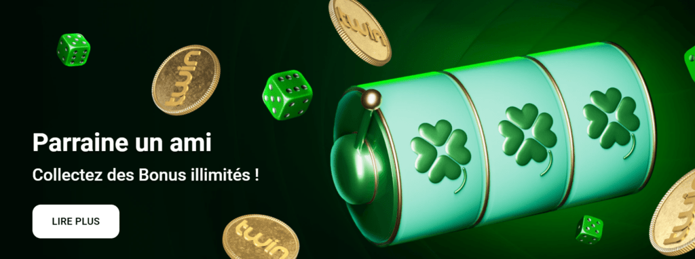

Découvrez notre Twin casino avis France en | 2025
L’offre des casinos en ligne disponibles en France ne cesse de grandir et il devient compliqué de savoir quelles sont les plateformes qui méritent vraiment l’attention. Nous étudions aujourd’hui Twin casino, un site qui a beaucoup d’atouts à faire valoir par rapport à la concurrence. Dans cette revue, nous allons vous expliquer en détail à quoi vous attendre en termes d’expérience utilisateur, de jeux proposés, de bonus sur la plateforme.
Grâce à notre Twin casino avis, vous saurez tout ce qu’il faut savoir avant de créer un compte sur ce casino en ligne France. Des machines à sous aux jeux de casino en direct en passant par la section des paris sportifs, nous avons tout passé au peigne fin pour vous proposer une revue complète et totalement impartiale.
À gauche de l’écran se trouvent les différentes catégories accessibles sur le site. Concernant les jeux casino en ligne vous avez bien sûr les inévitables machines à sous. Des catégories comme les machines Megaways, avec achat de bonus ou les dernières nouveautés vous permettent de trouver rapidement ce que vous cherchez.
En haut de l’écran, vous pouvez voir d’autres sections comme la partie Twin bet consacrée aux paris sportifs, la page des promotions ou encore le live casino. Nous pouvons dire que nous avons été séduits par l’ergonomie générale du site. La possibilité d’identifier rapidement toutes les sections du site et le design épuré, mais apaisant, font que l’on se sent tout de suite bien sur le casino Twin.
Remplissez le formulaire d’inscription de Twin casino à l’aide des informations suivantes:
- Adresse e-mail: entrez une adresse e-mail valide. Cette adresse sera utilisée pour créer un compte et pour toutes les communications ultérieures avec le casino. Il est essentiel d’utiliser une adresse à laquelle vous avez constamment accès, car une confirmation sera envoyée pour valider votre compte;
- Choisir un mot de passe: sélectionnez un mot de passe fort pour sécuriser votre compte. Il est recommandé d’utiliser une combinaison de lettres, de chiffres et de caractères spéciaux pour renforcer la sécurité. ne communiquez votre mot de passe à personne, car il est bien indiqué dans le conditions générale de Twin casino qu’un seul compte est autorisé par personne ;
- Fournissez vos données personnelles: indiquez des détails tels que votre nom et prénom, votre date de naissance et votre adresse;
- Accepter les termes et conditions: il est important de lire attentivement ces conditions, car elles contiennent des informations sur les droits et obligations des joueurs, ainsi que les politiques de bonus, de retrait et de jeu responsable.
- Confirmation de l’inscription: après avoir rempli le formulaire et accepté les termes, finalisez votre inscription en cliquant sur le bouton de confirmation;
- Vérification de l’identité: dans certains cas, Twin Casino peut vous demander une vérification supplémentaire, impliquant l’envoi de documents tels qu’une copie de la carte d’identité ou un justificatif de domicile.
- Connectez-vous à votre compte: une fois inscrit, connectez-vous avec l’adresse e-mail et le mot de passe choisi.
- Complétez votre profil: il est conseillé de compléter le profil en ajoutant des informations supplémentaires, telles qu’un numéro de téléphone, utile pour la récupération de compte ou pour des notifications importantes;
🎁 Twin casino en ligne: bonus et promotions
Twin casino a mis les petits plats dans les grands pour accueillir les nouveaux joueurs, mais aussi pour les conserver une fois inscrit. La page des promotions est remplie d’offres toutes plus intéressantes les unes que les autres. Nous allons maintenant vous donner un descriptif de ce qui vous attend tout au long de votre aventure sur Twin casino en ligne.
Pour ne jamais rater une offre, pensez à activer les notifications que ce soit sur votre ordinateur ou votre mobile. Rendez-vous aussi régulièrement sur la page des promotions pour avoir une vue d’ensemble de toutes les offres disponibles.

| Bonus de bienvenue casino | Parlons d’abord de l’offre de bienvenue pour les joueurs de casino. Elle consiste en un doublement de votre premier dépôt à hauteur de 1000 euros. C’est un sacré coup de pouce pour démarrer votre aventure. Comme partout, ce Twin casino bonus est bien évidemment sujet à des conditions de mise. Malgré l’importance du bonus, nous constatons que les exigences de mise ne sont pas abusives. Vous devez parier le montant du bonus 30 fois dans un délai de 14 jours pour pouvoir retirer les gains effectués avec ce dernier. Le code bonus Twin casino est disponible dans les 15 jours suivants votre inscription, alors attention à ne pas laisser passer cette opportunité unique sur un casino en ligne France |
| Bonus de bienvenue sport | Le gros plus de Twin casino online est de proposer une offre de bienvenue différente pour les personnes plus intéressées par les paris sportifs. Pour un dépôt de minimum 20euros, ce Twin casino code bonus vous droit à 100 % en plus à hauteur de 1000 euros! Une telle somme pour parier sur le sport est très rare et on ne peut que saluer l’opérateur pour offrir un bonus aussi généreux. D’autant que là encore les conditions de mise sont tout à fait correctes. Si vous optez pour ce bonus, vous devrez le miser 15 fois dans les 14 jours pour le débloquer. |
| Cashback quotidien sur les machines à sous | Une fois que vous êtes inscrit sur le site, les bonus continuent d’affluer sur votre compte. Dès le début, vous pourrez profiter de ce Twin casino bonus sans dépôt exclusif. Les joueurs de machines à sous peuvent bénéficier d’un cashback de 10 % par jour à hauteur de 200euros ! Voilà un excellent moyen de ne pas se laisser abattre par une session de jeu où la chance n’a pas voulu sourire.Vous pouvez réclamer votre cashback tous les jours à la condition d’avoir misé celui du jour précédent seulement 5 fois en 24 heures.Une fois que c’est fait, votre cashback sera disponible au retrait sur votre solde principal et vous pouvez de nouveau commencer à cumuler du cashback pour le jour suivant. |
| Bonus exclusif dans l’application Android | Twin casino en ligne possède une application vraiment bien conçue dont nous parlerons plus bas. Pour l’instant, tout ce que vous avez besoin de savoir, c’est que le simple fait de télécharger l’application vous donne droit à un bonus de 5euros. Le bonus sera crédité instantanément sur votre solde bonus et vous pourrez l’utiliser immédiatement. |
| Déposez et recevez un freebet | Les amateurs de paris sportifs ne sont pas laissés de côté puisqu’il est possible de recevoir 15 euros de freebet chaque fois que vous effectuez un dépôt de minimum 60 euros. Une nouvelle fois les conditions de mise sont plutôt souples puisque vous n’avez qu’à miser 5 fois le montant du bonus sur des cotes de minimum 1.80 pour le débloquer. Une fois les conditions remplies, vous pouvez de nouveau déposer et profiter de l’offre une nouvelle fois. |
Comme vous pouvez le constater, Twin casino France est une plateforme offrant une pléiade de bonus à ses joueurs. Le gros avantage par rapport à la concurrence est que ces bonus ne sont pas assortis de conditions de mise absurdes ou impossibles à réaliser.

🎲 Les différents types de jeux sur Twin.com
Twin casino en ligne ce n’est pas seulement des promotions nombreuses et équitables, c’est aussi une sélection de jeux de casino impressionnante. De nos jours, un casino digne de ce nom se doit de posséder un catalogue immense pour satisfaire le plus grand nombre.
Twin l’a bien compris et propose tout ce que vous pouvez imaginer. De plus, les partenariats liés avec les fournisseurs les plus renommés de l’industrie du iGaming assurent une qualité de production et un RTP toujours dans les normes du marché.
| Machines à sous | Les machines à sous sont depuis longtemps les stars incontestées des casinos en ligne. Si vous êtes un amateur de slot machine, vous allez être gâté sur Twin casino en ligne. Des milliers de jeux vous attendent et il y en a pour tous les goûts. Des plus classiques aux plus avancées, les machines à sous Twin offrent un panel impressionnant de choix. Pour vous y retrouver dans cette immense ludothèque, le site est organisé par sections et des filtres vous aident également à affiner votre choix. Les catégories les plus plébiscitées comme les machines Megaways, celles avec achat de bonus et celles incluant des jackpots sont accessibles directement depuis le menu à gauche de l’écran. Un filtre permettant de trier les jeux par fournisseur est également disponible si vous avez une préférence pour un studio en particulier. Au total, ce ne sont pas moins de 3 000 machines à sous qui s’offrent à vous. Autant dire largement de quoi utiliser les Twin casino free spins que vous recevrez au cours des nombreux tournois organisés par le casino. |
| Live Casino | Le casino en direct et l’autre section majeure du site. Chose importante à signaler, ce ne sont pas moins de 14 fournisseurs qui approvisionnent Twin en jeux en direct. Néanmoins, la majorité des jeux provient d’Evolution Gaming. Cela est une très bonne nouvelle, considérant que ce studio est le plus réputé dans ce domaine. Un choix incroyable de roulettes, de blackjack et de baccara s’offrent à vous. Les options de mise sont très larges, permettant aux plus grand nombre de s’essayer à tous ces jeux mythiques même avec un budget réduit. À côté des tables classiques, on retrouve des variantes modernes comme la Lightning roulette ou l’Ultimate Blackjack. Une section spéciale est également dédiée aux reproductions de jeux télévisés. Ce nouveau type de jeux de casino se déroulent dans des décors dignes des plus grands plateaux de télévision et permettent à ceux qui ne sont pas des habitués des jeux de casino traditionnels de s’amuser. |
| Gain instantané | Les jeux à gain instantané sont la nouvelle coqueluche des joueurs de casino en ligne et Twin casino online en met des centaines à votre disposition. Aussi appelé Crash Games, le fonctionnement simple et rapide de ces jeux en font les compagnons idéal de vos longues soirées d’hiver. D’Aviator à Mines en passant par le Plinko, Twin casino vous permet de découvrir ces nouveautés en version démo ou argent réel. |
| Jeux de grattage | Les jeux à gratter virtuels sont de plus en plus populaires et sur Twin casino en ligne vous en trouverez toujours de nouveaux à découvrir. Il en existe sur tous les thèmes possibles et imaginables. Cliquez simplement sur le jeu de votre choix, et utilisez votre souris ou votre doigt pour gratter le ticket comme vous le feriez dans un bureau de tabac. Rapide et grisant, ce type de jeux est parfait pour une petite partie sur le pouce. |
| Jeux de table | Les jeux de table en version HTML5 permettent de jouer sans téléchargement à la roulette, au blackjack au poker et à tout un tas d’autres jeux de casino. Twin casino propose une sélection décente de ces jeux. Il est possible de les essayer en mode démo. Cela peut être pratique pour apprendre les règles sans avoir à risquer son argent. |
Le catalogue de Twin casino France est alimenté par les plus grands fournisseurs de l’industrie du iGaming. Les studios présents sont tous reconnus pour la qualité de leurs productions. Voici quelques-uns des fournisseurs les plus célèbres que vous pouvez retrouver:
- Pragmatic Play: aussi à l’aise dans la création de machines à sous que celles des jeux de casino live, Pragmatic Play est une valeur sûre dans l’industrie depuis de nombreuses années;
- Evolution Gaming: spécialiste incontesté dans le domaine du Live Casino, Evolution Gaming est à l’origine de nombreux concepts novateurs comme les reproductions de jeux télévisés;
- Nolimit city: si vous êtes à la recherche de machines à sous pas comme les autres, essayez les jeux Nolimit City. Avec un goût prononcé pour la provoc et les fonctionnalités bonus extravagantes, leurs productions ne laissent personne indifférent.
👉 Faut-il parier en ligne sur Twin Bet ?
Twin ce n’est pas qu’un excellent casino en ligne, c’est aussi un excellent site de paris sportifs. Les parieurs français seront ravis d’avoir accès à autant d’options que ce soit en pré-match ou en direct. De plus, la diffusion de beaucoup de rencontres en streaming augmente l’intérêt de parier live.
⚽ Twin paris sportif
Twin bet met à votre disposition plus de 40 sports différents. Le football est bien évidemment à l’honneur avec tous les plus grands championnats européen. La Ligue 1 et la Ligue 2 sont très bien représentées de même que la coupe de France et la coupe de la Ligue. Si vous préférez le rugby, le tennis ou le basketball, des dizaines de marchés vous attendent également.
Un section des sports les plus populaires vous permet de voir en un clin d’œil sur quels événements les utilisateurs du site mise en ce moment. La section e-sport de Twin bet est l’une des plus complètes en hexagone. Placer des paris sportifs sur des matchs de Dota 2, League of Legend, Valorant et bien d’autres.
Nous avons pu constater que les cotes paris sportifs que l’on trouve sur Twin casino France sont très souvent au-dessus de la moyenne du marché, ajoutant de la valeur pour les parieurs.
🎰 Paris en direct
Twin bet propose aussi des paris en live sur un nombre impressionnant d’événements. Le calendrier des matchs à venir est facilement accessible et vous pouvez le trier par sport pour ne pas vous encombrer d’informations inutiles. Nous avons passé un certain temps dans la section des paris en direct de Twin pour observer l’évolution des cotes.
À notre grande satisfaction, nous avons vu que les cotes sont vraiment ajustées en temps réel et reflètent parfaitement la physionomie des matchs en cours. Les offres de cashout de Twin paris sportif sont elles aussi nombreuses et appropriées par rapport aux scores des événements.
🎯 Paris sur les sports virtuels
Pour les parieurs pressés voulant un résultat rapide et de l’action non-stop, Twin bet possède une section de paris V-Sport. Vous pouvez parier sur plusieurs grands championnats de foot, de basket-ball, de tennis et beaucoup d’autres.
La différence est qu’ici tous les matchs sont générés par l’ordinateur. Les résultats tiennent compte des statistiques détaillées de chaque équipe bien sûr, mais comme dans le vrai sport, des surprises sont toujours possibles.
💵 Méthodes de paiement disponibles sur Twin Casino
Twin Casino propose une variété de méthodes de paiement pour faciliter les dépôts et les retraits, répondant ainsi aux besoins de tous les joueurs. La plateforme vise à offrir une expérience de jeu fluide et sécurisée, et cela commence par des options de paiement pratiques et diversifiées.
- Cartes bancaires: Tout d’abord, les cartes de crédit et de débit sont largement acceptées sur Twin Casino. Les joueurs peuvent utiliser des cartes Visa et Mastercard pour effectuer des dépôts instantanés, permettant ainsi de commencer à jouer sans délai. Les transactions par carte sont généralement sécurisées et offrent un moyen familier pour la plupart des utilisateurs.
- Portefeuilles électroniques: Twin casino en ligne propose également des portefeuilles électroniques comme Skrill et Neteller. Ces options sont idéales pour ceux qui recherchent une méthode de paiement rapide et efficace. Les dépôts effectués via ces portefeuilles sont instantanés, et les retraits sont souvent traités plus rapidement que les cartes de crédit traditionnelles. Cela permet aux joueurs de retirer leurs gains sans avoir à attendre.
- Virement bancaire: Twin Casino accepte également les virements bancaires, bien qu’ils soient généralement plus lents que les autres méthodes. Les virements peuvent prendre plusieurs jours ouvrables pour être traités, ce qui peut être un inconvénient pour ceux qui souhaitent des transactions rapides. Cependant, cette méthode reste populaire pour les joueurs qui préfèrent ne pas utiliser de cartes ou de portefeuilles électroniques.
- Crypto-monnaies: Twin online casino a intégré des options de dépôt en Bitcoin. Cela offre une alternative moderne et sécurisée, avec des frais de transaction souvent inférieurs à ceux des méthodes traditionnelles. Les dépôts en Bitcoin sont traités rapidement, permettant aux joueurs de commencer à jouer immédiatement après la confirmation de la transaction. De plus, l’utilisation de Bitcoin offre un niveau d’anonymat que les méthodes de paiement classiques ne peuvent pas garantir.
En ce qui concerne les retraits, nous avons constaté que Twin Casino s’efforce de traiter les demandes le plus rapidement possible, indépendamment de la méthode choisie. Les joueurs peuvent s’attendre à recevoir leurs fonds dans un délai raisonnable, bien que ce délai puisse varier en fonction de la méthode de paiement sélectionnée.
Par exemple, les retraits via portefeuilles électroniques sont généralement plus rapides que ceux effectués par carte ou par virement bancaire.Enfin, il est essentiel pour les joueurs de vérifier les frais associés à chaque méthode de paiement, car ceux-ci peuvent varier. Twin affiche clairement ces informations sur son site, permettant aux joueurs de choisir la méthode qui leur convient le mieux sans surprises.
Twin Casino offre donc une gamme variée de méthodes de paiement. Cette variété permet aux joueurs de choisir la solution qui correspond le mieux à leurs préférences en matière de rapidité, de sécurité et de commodité. Que ce soit pour effectuer un dépôt rapide ou pour retirer des gains, vous pouvez vous attendre à une expérience de paiement fluide sur ce casino en ligne.
➡️ Comment s’inscrire au casino Twin ?
Lors de votre première connexion Twin casino suivez ce guide pas à pas pour créer votre compte et commencer à jouer en un rien de temps. Les équipes de Twin ont travaillé d’arrache pied pour que le processus d’inscription se fasse le plus facilement et le plus rapidement possible.
- Accéder au site: dès l’arrivée sur le site, l’utilisateur est accueilli par une interface ergonomique et épuré facilitant la navigation. Identifiez le bouton d’inscription se fait en un battement de cil ;
- Cliquer sur «S’inscrire»: le bouton «S’inscrire» est situé en haut à droite de la page d’accueil. En cliquant dessus, vous serez redirigé vers un formulaire d’inscription.
📲 Compatibilité tablette et mobile
Twin casino France a pour objectif de devenir le casino en ligne numéro 1 sur les appareils mobiles. Le moins que l’on puisse dire, c’est que le site a mis les moyens pour concrétiser ses ambitions.L’application Android Twin est un véritable modèle du genre et pourrait vite faire de l’ombre à des géants du secteur.
La Twin casino app nous a surpris par sa fluidité et sa vitesse de chargement. Que ce soit pour jouer au casino live ou au machines à sous, tout s’exécute parfaitement. La plateforme est tellement fière de son application qu’elle propose même un bonus sans dépôt de 5 euros à toutes personnes qui la télécharge.
L’application fonctionne également parfaitement pour placer des paris sportifs en direct et regarder des matchs en streaming sans aucun lag. Seul bémol, cette fabuleuse application n’est pas disponible pour les appareils iOS. Les possesseurs d’iphones et d’ipad peuvent néanmoins jouer sur une version optimisée pour mobile depuis leur navigateur internet. Cette version mobile du site répond très bien et ne contient aucun bug majeur à signaler.
👑 Programme de fidélité et VIP chez Twin France
Le programme de fidélité et VIP de Twin Casino France récompense les joueurs pour leur engagement et leur activité. En participant, les joueurs accumulent des points à chaque mise, qui peuvent être échangés contre des bonus, des tours gratuits ou des récompenses exclusives.
Les membres VIP bénéficient d’avantages supplémentaires tels que des gestionnaires de compte dédiés, des offres personnalisées, des invitations à des événements spéciaux et des retraits prioritaires. Ce programme vise à créer une expérience de jeu enrichissante et personnalisée, permettant aux joueurs de profiter d’un service premium et de récompenses attrayantes tout au long de leur parcours de jeu.
📱 Interface et expérience utilisateur
Le casino Twin possède un design épuré dans une teinte bleue-gris très apaisante pour les yeux. On est loin des plateformes affichant des looks criards et rapidement fatigants. Cela donne tout de suite l’impression d’avoir affaire à un casino en ligne fiable et digne de confiance.
Lorsque vous arrivez sur la page d’accueil de Twin.com vous avez en une seconde un aperçu de tout ce qui vous attend. Ce qui attire le regard dans un premier temps, ce sont les bannières promotionnelles qui défilent en haut de l’écran. Les bonus sont nombreux et donnent tout de suite envie de cliquer.
Juste en dessous on peut voir la liste des derniers grands gagnants ainsi que la somme remportée et la machine à sous concernée. Très pratique si vous ne savez pas par où commencer votre aventure sur Twincasino.
📌 Twin Casino est-il sûr ?
La question de la sécurité est primordiale lorsque l’on parle de jouer de l’argent sur internet. Est-ce que Twin casino online répond présent dans ce domaine ? La réponse est un grand oui. Premièrement, le site a mis en place des protocoles de cryptage SSL dernier cris pour assurer la confidentialité de toutes les transactions financières. Aucun risque donc de voir vos données être captées par des personnes malveillantes.
Au niveau de la transparence et de l’équité de Twin casino en général, nous pouvons affirmer que le site est totalement en règle. Le casino détient une licence de l’autorité de régulation des jeux de Curaçao, qui comme chacun sait est un organisme réputé dans l’industrie.
Cette licence est la preuve que le casino Twin se plie régulièrement à des audits de sécurité et de contrôle. Jouer sur Twin se fait donc en toute sécurité pour les joueurs français. Le casino Twin applique également une politique de jeu responsable qui vous permet de définir des limites de dépôts et de mise. Vous avez ainsi toujours le contrôle sur vos activités de jeu.
❓ FAQ
Comment Twin Casino assure-t-il la sécurité de mes données?
Twin Casino utilise des technologies de cryptage SSL avancées pour protéger les informations personnelles et financières des joueurs. De plus, le casino est réglementé et opère sous une licence de Curaçao, garantissant un environnement de jeu sécurisé et équitable.
Quelles méthodes de paiement sont disponibles sur Twin Casino?
Twin casino en ligne propose plusieurs méthodes de paiement, y compris les cartes de crédit (Visa, Mastercard), les portefeuilles électroniques (Skrill, Neteller), les virements bancaires et les crypto-monnaies comme le Bitcoin, offrant ainsi de la flexibilité pour les dépôts et retraits.
Latest posts by Vincent Eroukmanoff (see all)